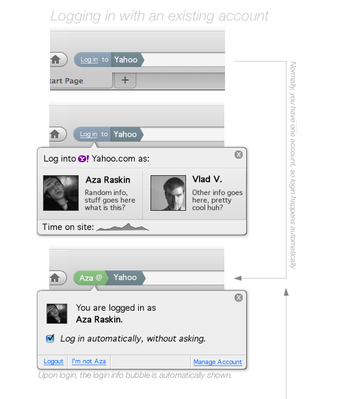

mischa.tuffield@garlik.com (@mischatuffield)
2011-04-07: Digital Identity on the Semantic Web Vienna SW Meetup
Knowledge may be power, but this knowledge is distributed throughout social networks of people. Without ways of building the Social Web into a first-class citizen of the Web, we will never be able to "program the social computer" to solve large-scale social problems.
After the W3C Workshop on the Future of Social Networking in Barcelona, for over a year the Social Web Incubator Group has been meeting on a weekly basis to overview the space and craft a strategy for the W3C.
The results are grim...

Socially Aware Cloud Storage and Distributed Social Networking
Log-in to your favorite social networking site using passwords and cookies, and the cookie is sent over the clear...so now your identity can easily be hijacked by anyone (particularly with the Firesheep plug-in).
Our survey included detailing technologies and initiatives in the following spaces
And all this work is happening outside the W3C, and needs to be co-ordinated with the core of the Web to solve the problem of security.
This document is the product of the Social Web (SWXG) Incubator Group. At the time of publication, the active members of the Social Web Incubator Group included Tim Anglade, Daniel Appelquist, Dan Brickley, Melvin Carvalho, Venezia Claudio, Harry Halpin, Renato Iannella, Toby Inkster, Alexandre Passant, Christine Perey, Ronald Reck, Ted Thibodeau, Mischa Tuffield, Oshani Seneviratne, Henry Story, Fabien Gandon, and Paul Trevithick. This report is dedicated to the memory of Peter Ferne, who participated in the Social Web Incubator Group. The group would like to thank the following people who we consulted with over the lifetime of the Social Web Incubator Group in order to make this final report: Robin Berjon, Tim Berners-Lee (MIT), Joseph Bonneau (Cambridge), Marcos Caceres (Opera), Michael Cooper (W3C), Sam Critchley (Gypsii), Anita Doehler (Vodafone), Nathan Eagle (MIT), Kaliya Hamlin (Identity Commons), Michael Hanson (Mozilla), Dick Hardt (OpenID Foundation), Eran Hammer-Lahav (Yahoo!), Yolanda Gil (USc), Paul Groth (Vrije University Amsterdam ), Lalana Kagal (MIT), Ros Lawler (Random House), Matt Lee (Free Software Foundation), Chris Messina (Google), Alexandre Monnin (Sorbonne), Sören Preibusch (Cambridge), Evan Prodromou (Status.Net), David Raggett (W3C), Aza Raskin (Mozilla), David Recordon (Facebook), Gregory Rosmaita, Janina Sajka (Web Accessibility Initiative), Luke Shepard (Facebook), Joseph Smarr (Google), Manu Sporny (Digital Bazaar), Peter St. Andre (Cisco), Simon Tenant, and Slim Trabelsi (SAP). We also gratefully received and incorporated comments from J. Trent Adams (ISOC), Jon Bradley (OpenID Foundation), Joni Brennan (Kantara Initiative), John Bradley (OpenID Foundation), and Brian Kissel (OpenID Foundation). Finally, the W3C would like to thank Eduserv for providing a W3C Fellowship for Harry Halpin.
The Social Web XG's Final Report is the first (30 page) description of (more-or-less) the entire Social Web, from identity, profiles, social media, privacy, activity, and emerging work...

The final version of the report should be available, in HTML format, from tonight http://www.w3.org/2005/Incubator/socialweb/XGR-socialweb/
<-- My favourite TimBL picture, The Semantic Metro
W3C will re-invigorate privacy and digital identity with new resources, hosting workshops to gather requirements for Web Identity from eGov and e-Commerce, and may start a Working Group in this area. The "Community Group" proposal implements most of the structural changes necessary to make the W3C suitable for future social web work, and the W3C will provide resources for the next round of the Federated Social Web effort as a new Community Group.
{kind=link}